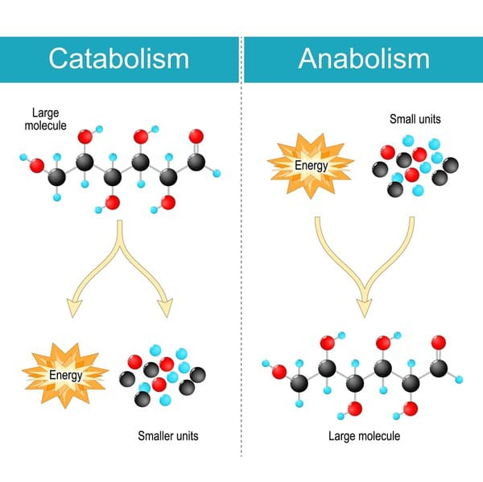
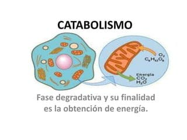
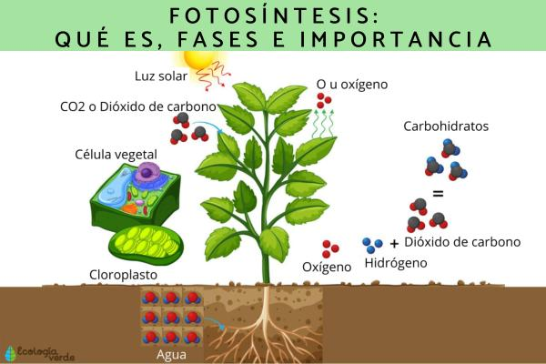
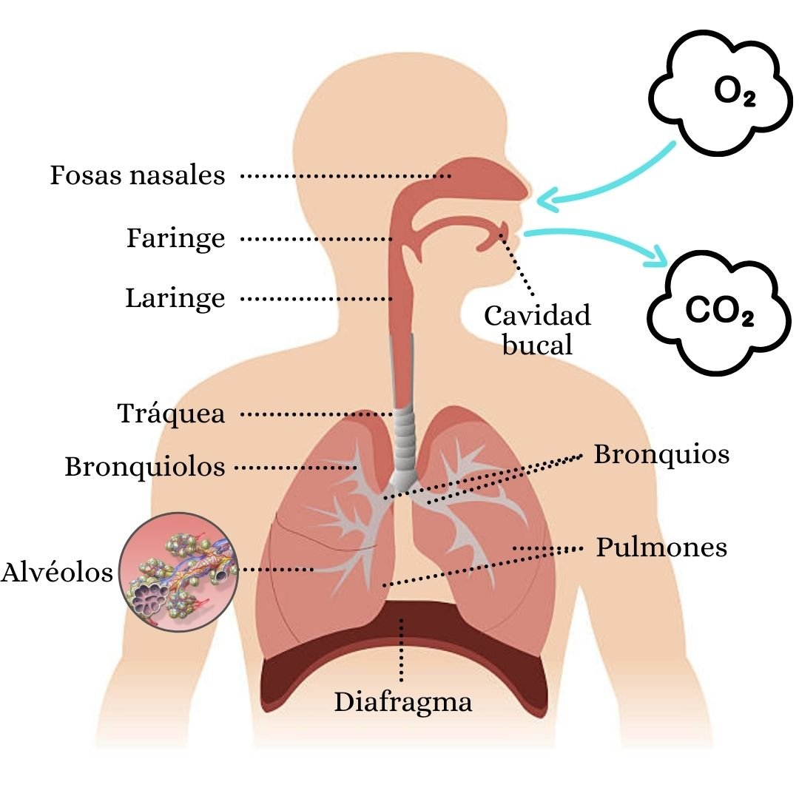

Metabolismo
Anabolismo
El anabolismo es el conjunto de procesos metabólicos en los cuales se sintetizan moléculas más complejas a partir de moléculas más simples. Estos procesos requieren energía para llevarse a cabo y son fundamentales para el crecimiento, reparación y mantenimiento del organismo.
Durante el anabolismo, se construyen moléculas orgánicas a partir de precursores como aminoácidos, ácidos grasos y carbohidratos. Estas moléculas orgánicas incluyen proteínas, lípidos y carbohidratos complejos, entre otros.
El anabolismo es el proceso opuesto al catabolismo, que es la degradación de moléculas complejas en moléculas más simples con liberación de energía. Juntos, el anabolismo y el catabolismo forman el metabolismo, que es el conjunto de reacciones químicas que ocurren en el organismo para mantener su funcionamiento.
El anabolismo es esencial para el crecimiento y desarrollo de los tejidos, así como para la reparación de células dañadas. Además, también juega un papel importante en la síntesis de hormonas y neurotransmisores, y en el almacenamiento de energía en forma de glucógeno o grasas.
Algunos ejemplos de procesos anabólicos incluyen la síntesis de proteínas a partir de aminoácidos, la formación de glucógeno a partir de glucosa, la producción de ácidos grasos y triglicéridos a partir de moléculas más simples, y la síntesis de ADN y ARN a partir de nucleótidos.
En resumen, el anabolismo es el proceso metabólico encargado de construir moléculas orgánicas más complejas a partir de moléculas más simples, utilizando energía. Estos procesos son fundamentales para el crecimiento, desarrollo y mantenimiento del organismo.

Catabolismo
Catabolismo es el proceso metabólico en el cual se descomponen las moléculas complejas para obtener energía. Durante la etapa de catabolismo, las grandes moléculas se convierten en moléculas más simples, como azúcares, ácidos grasos y aminoácidos, que pueden ser utilizados como fuentes de energía por el organismo.
El catabolismo ocurre en todas las células del cuerpo y está regulado por una variedad de enzimas y procesos bioquímicos. Algunos ejemplos de catabolismo incluyen la glucólisis, la beta-oxidación y la degradación de proteínas.
En la glucólisis, los carbohidratos se descomponen en glucosa y luego se convierten en piruvato, produciendo energía en forma de adenosín trifosfato (ATP). La beta-oxidación es el proceso de descomposición de los ácidos grasos para obtener acetil-CoA, que es utilizado en el ciclo de Krebs para producir más ATP.
En el caso de las proteínas, el catabolismo implica la degradación de los aminoácidos a través de diferentes rutas metabólicas. Estos aminoácidos pueden ser usados para producir energía o para la síntesis de nuevos compuestos biológicos.
Es importante destacar que el catabolismo y el anabolismo son procesos complementarios. Mientras que el catabolismo está relacionado con la descomposición de moléculas y la liberación de energía, el anabolismo se refiere a la síntesis de moléculas más complejas utilizando esa energía. Ambos procesos son fundamentales para el metabolismo celular y garantizan el equilibrio energético y la renovación adecuada de los componentes celulares.

Fotosíntesis
La fotosíntesis es el proceso mediante el cual las plantas, algas y algunas bacterias utilizan la energía del sol para convertir dióxido de carbono y agua en glucosa y oxígeno. Es un proceso fundamental en la producción de alimentos y oxígeno en nuestro planeta.
La fotosíntesis se lleva a cabo en dos etapas: la fase luminosa y la fase oscura. En la fase luminosa, los pigmentos de clorofila presentes en las células captan la luz solar y la convierten en energía química en forma de ATP (adenosín trifosfato). Esta energía se utiliza posteriormente en la fase oscura.
En la fase oscura, también conocida como ciclo de Calvin, el dióxido de carbono se combina con el ATP y se produce la reducción de NADP+ a NADPH. Estos compuestos energéticos se utilizan junto con la enzima rubisco para convertir el dióxido de carbono en glucosa.
La fotosíntesis es esencial para mantener el equilibrio de gases en la atmósfera, ya que las plantas liberan oxígeno como subproducto. Además, proporciona una fuente de energía y nutrientes para los organismos que se alimentan de las plantas.
En resumen, la fotosíntesis es un proceso vital que permite a las plantas y otros organismos fotosintéticos convertir la energía del sol en compuestos orgánicos, sustentando así la vida en la Tierra.

Respiración
La respiración es un proceso vital en los seres vivos que consiste en la toma de oxígeno del medio ambiente y la eliminación de dióxido de carbono producido por las células. Es esencial para el funcionamiento adecuado de los órganos y sistemas del cuerpo.
En los humanos, la respiración implica la inhalación de aire a través de la nariz y/o boca, que luego llega a los pulmones. Dentro de los pulmones, el oxígeno se difunde hacia la sangre a través de los alvéolos pulmonares, mientras que el dióxido de carbono se expulsa de la sangre hacia los pulmones para ser eliminado al exhalar.
El proceso de respiración es regulado por el sistema respiratorio, que incluye los pulmones, las vías respiratorias y el diafragma. El diafragma es un músculo ubicado debajo de los pulmones que se contrae y se relaja para permitir la respiración. Además, existen mecanismos de control en el cerebro que regulan la velocidad y profundidad de la respiración según las necesidades del cuerpo, como el nivel de actividad física o la concentración de dióxido de carbono en la sangre.
La respiración también está vinculada con otros sistemas del cuerpo, como el sistema circulatorio. El oxígeno inhalado durante la respiración se une a los glóbulos rojos en la sangre y es transportado a todas las células del cuerpo, donde es utilizado en el proceso de producción de energía. A su vez, las células producen dióxido de carbono como producto residual, que se transporta nuevamente a los pulmones para ser exhalado.
Además de su función fisiológica, la respiración también desempeña un papel en otras actividades, como el habla, donde el aire sale de los pulmones y pasa a través de la laringe, la faringe y la boca para generar sonidos y formar palabras.
En resumen, la respiración es un proceso esencial para la vida que nos permite obtener el oxígeno necesario para nuestras células y eliminar los desechos en forma de dióxido de carbono. Es una función automática regulada por el sistema respiratorio y está intrínsecamente conectada con otros sistemas del cuerpo.

REGRESAR